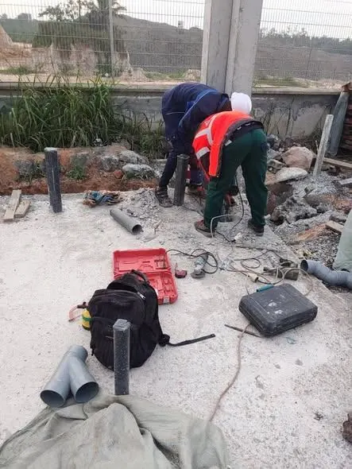
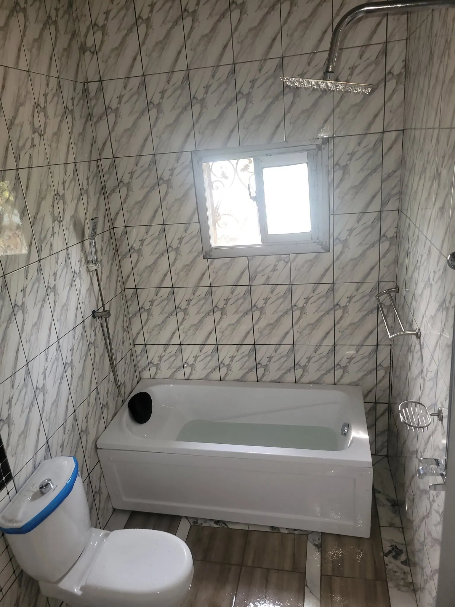
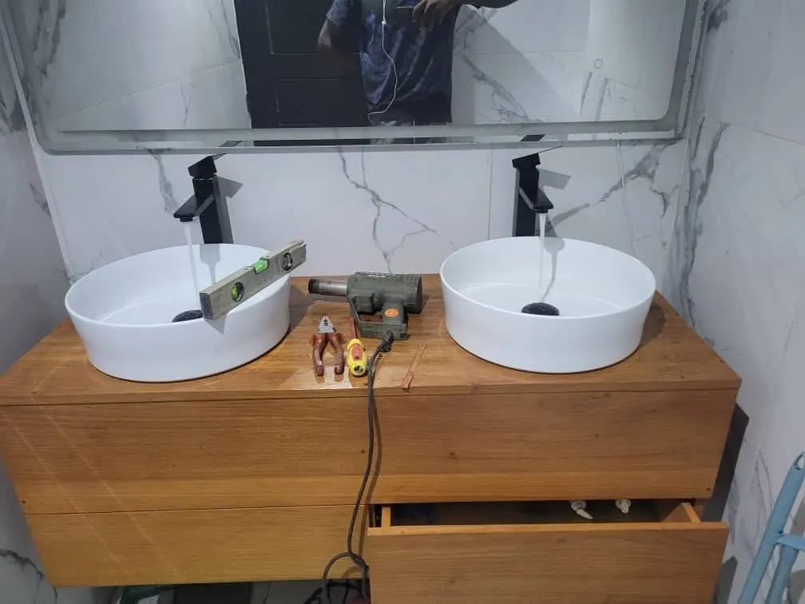
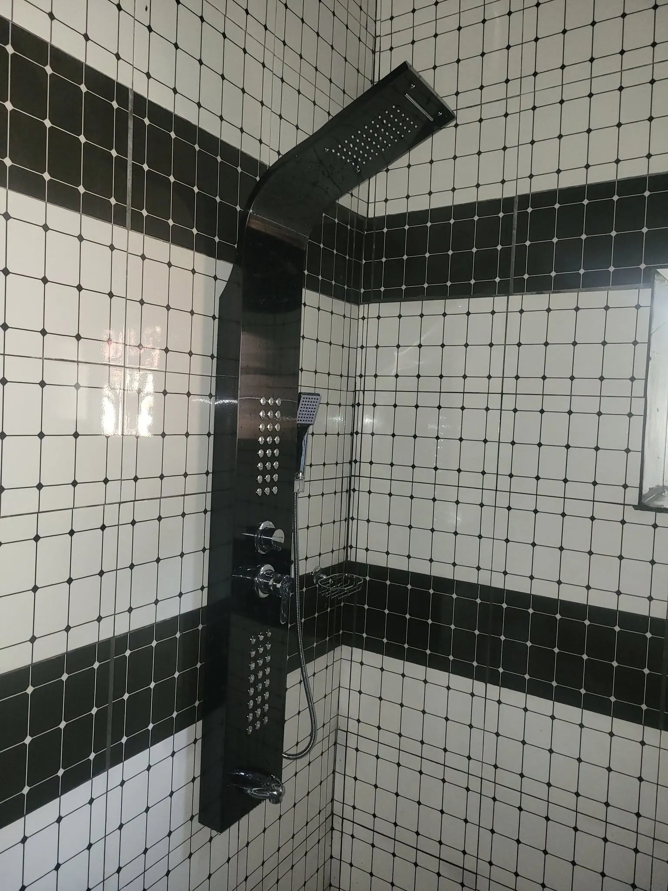
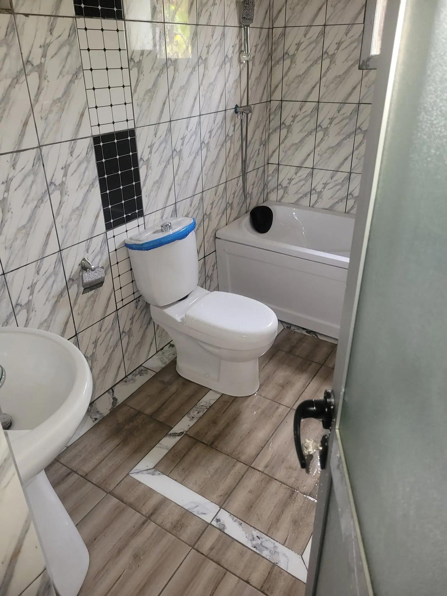
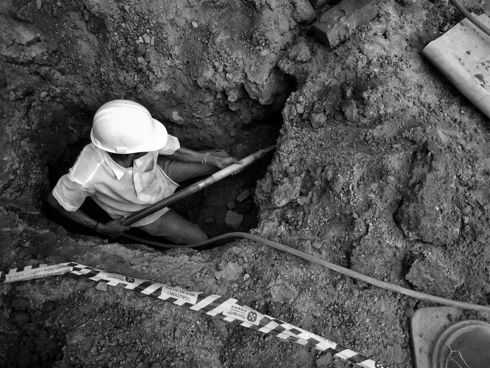
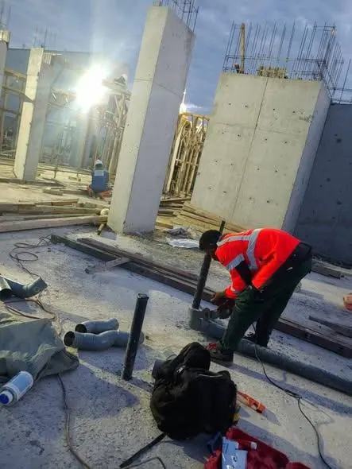

Plombier de Douala, au service d'un bâtiment plus sûr et plus sain
PGC cm, c'est une équipe de plomberie pro basée à Akwa : plomberie sanitaire, tuyauterie et réseaux hydrauliques, pour particuliers comme pour chantiers.

Plomberie pro : on règle le problème, pas seulement les symptômes
Trop de propriétaires à Douala connaissent la même histoire : un plombier qui colmate vite, une fuite qui revient, des murs cassés pour rien et une facture qui gonfle.
Chez PGC cm, nous cherchons la cause, nous expliquons ce que nous allons faire, puis nous le faisons proprement. Plombier professionnel à Douala, nous soignons les finitions comme les réseaux cachés derrière vos murs.
Un plombier autour de vous, fiable et transparent
Réactivité
Une urgence de plomberie n'attend pas : nous répondons vite et intervenons en priorité.
Sérieux & garantie
Matériel de qualité, travail soigné, installations garanties.
Transparence
Devis gratuit et clair, sans surprise sur la facture.
Plomberie sanitaire & réseaux : nos chantiers à Douala







Un souci de plomberie ? Parlons-en.
- Appelez-nous+237 693 41 58 63
- AdresseAkwa, Rue Castelnau, Douala
- HorairesLundi – Samedi, dès 8h · Urgences 24/7